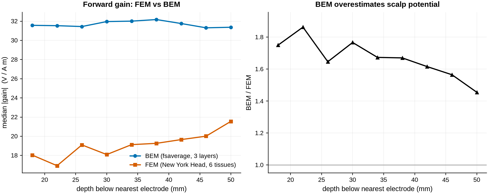
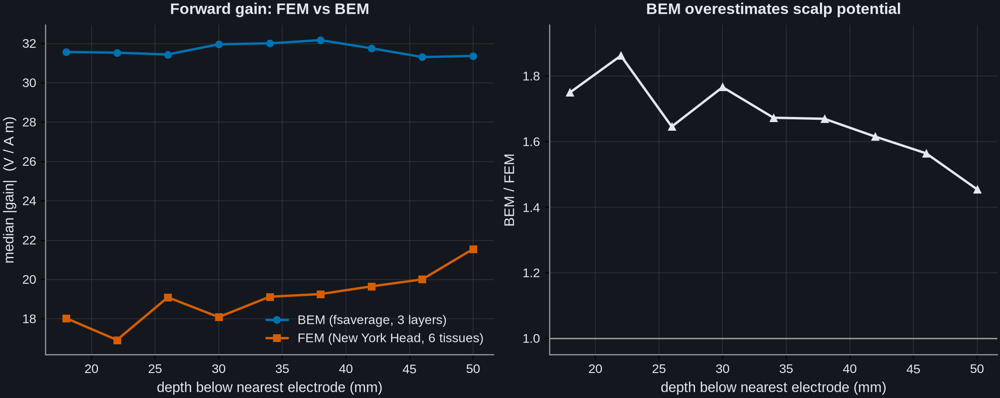
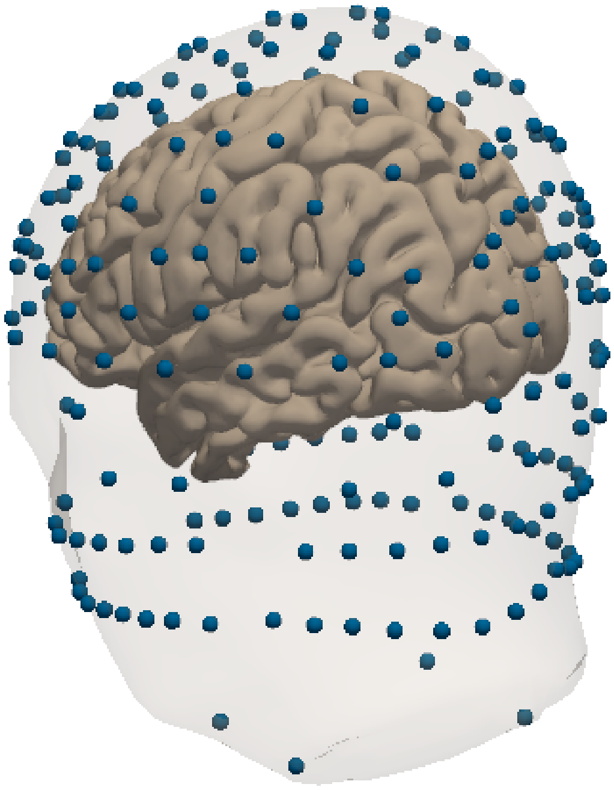
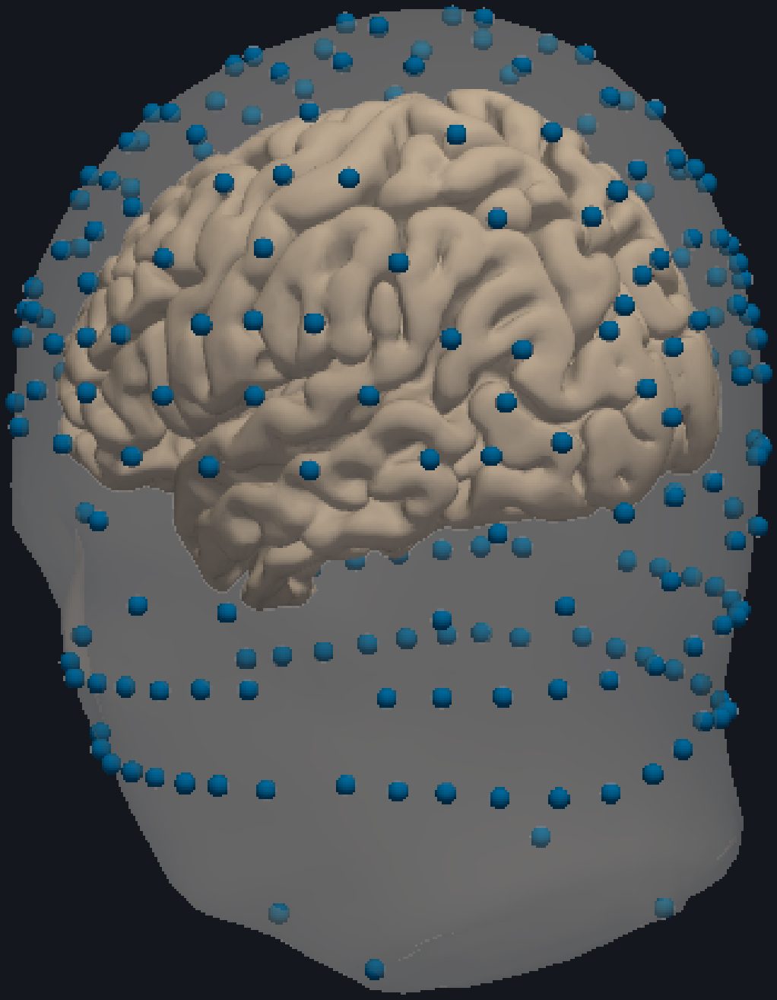
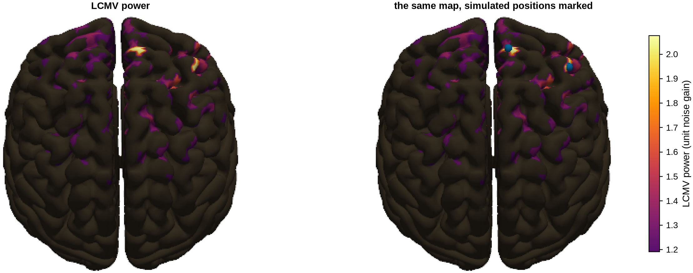
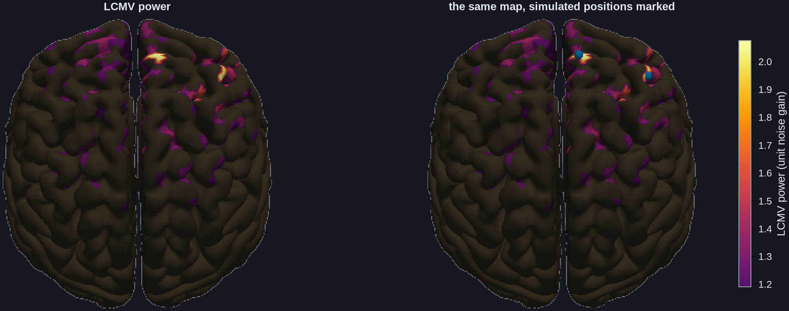

Note
Go to the end to download the full example code.
Beamforming EEG on a finite-element head model#
Every forward solution MNE-Python can compute uses the boundary element method: nested, closed, homogeneous surfaces for scalp, outer skull and inner skull. That model has no way to represent the cerebrospinal fluid, the split of the skull into compact and spongy bone, or the openings at the orbits and the auditory meatus. For EEG those omissions bias the forward field, because current has to flow through all of it to reach the electrodes. The finite element method (FEM) discretises the whole head volume instead and gives every tetrahedron its own conductivity. MNE-Python has no FEM solver.
This example uses a precomputed one. The New York Head [1]
is a six-tissue FEM model of the ICBM152 template, solved once at high
resolution and distributed as a lead field for 231 electrodes of the 10-05
system at 74382 cortical nodes.
read_ny_head_forward() wraps it as an ordinary
mne.Forward, which is the only thing any beamformer needs.
mne.beamformer.make_lcmv() and the multi-source methods in this package
therefore run on it unchanged.
Three things are shown: what the FEM forward differs from a BEM forward by, that the beamformers localise correctly on it, and where the approach stops (it is EEG-only, for a reason that is geometric rather than technical).
Note
The model is a 678 MB download, licensed by its authors under the GPL v3. It is fetched on demand and is not redistributed with this BSD-licensed package. Publications using it must cite [1].
# Authors: Sepehr Shirani <sepehrshirani@gmail.com>, <s.shirani@ucl.ac.uk>
# Muzhi Wang <muzhi.wang@ucl.ac.uk>
# Jade Serfaty <jade.serfaty.17@ucl.ac.uk>
# License: BSD-3-Clause
import matplotlib.pyplot as plt
import mne
import numpy as np
import pyvista as pv
from matplotlib.colors import LinearSegmentedColormap
from mne.beamformer import apply_lcmv_cov, make_lcmv
from advance_beamlab import (
apply_mcmv,
fetch_ny_head,
make_mcmv,
make_ny_head_info,
ny_head_montage,
ny_head_picks,
ny_head_plot_indices,
ny_head_scalp,
read_ny_head_forward,
scan_mcmv,
)
The FEM forward#
resolution selects one of the model’s nested cortical meshes; they are
strict subsets of one another, so a coarse mesh is a genuine subsampling of
the same geometry. 5K is ample for EEG, whose spatial resolution is far
coarser than the mesh.
# ``read_ny_head_forward`` fetches the model on first use. Call
# :func:`~advance_beamlab.fetch_ny_head` yourself to control where it is cached,
# or to download it ahead of time on a machine that will later be offline.
print(f"model cached at: {fetch_ny_head()}")
fwd = read_ny_head_forward(resolution="5K", orientation="normal")
info = make_ny_head_info(sfreq=250.0)
print(fwd)
model cached at: /home/runner/mne_data/NYHead/sa_nyhead.mat
<Forward | MEG channels: 0 | EEG channels: 231 | Source space: Surface with 5004 vertices | Source orientation: Fixed>
Note the rank. The lead field is supplied in common average reference, so it
is rank deficient by exactly one and any data generated from it will be too.
That is not a defect to be regularised away: it is what average referencing
means. Every beamformer here resolves it through mne.compute_rank()
rather than inverting a singular matrix.
gain = fwd["sol"]["data"]
print(
f"electrodes: {fwd['nchan']}, rank of the lead field: {np.linalg.matrix_rank(gain)}"
)
electrodes: 231, rank of the lead field: 230
What the FEM changes#
The comparison that matters is against the model MNE would otherwise have
used. We build a three-layer BEM forward on fsaverage for the same 231
electrodes and cortical-normal dipoles, and compare gain magnitudes as a
function of how deep the source sits below the nearest electrode.
subjects_dir = mne.datasets.fetch_fsaverage().parent
montage = ny_head_montage()
info_bem = mne.create_info(list(montage.ch_names), 250.0, "eeg")
info_bem.set_montage(montage)
bem = mne.make_bem_solution(
mne.make_bem_model(
"fsaverage", ico=3, conductivity=(0.3, 0.006, 0.3), subjects_dir=subjects_dir
)
)
src_bem = mne.setup_source_space(
"fsaverage", spacing="ico4", subjects_dir=subjects_dir, add_dist=False
)
fwd_bem = mne.make_forward_solution(
info_bem, trans="fsaverage", src=src_bem, bem=bem, eeg=True, meg=False
)
fwd_bem = mne.convert_forward_solution(fwd_bem, force_fixed=True, use_cps=True)
# Match the FEM convention, which is average referenced.
gain_bem = fwd_bem["sol"]["data"]
gain_bem = gain_bem - gain_bem.mean(0, keepdims=True)
Both models are in MNE’s units of V/(A m), so the curves are directly comparable. The FEM gains are consistently lower, by a median factor of about 1.7 against this particular BEM. Resist reading that as the isolated effect of representing the cerebrospinal fluid. The factor is joint with the skull conductivity hard-coded above: re-running this same comparison at 0.0033 S/m gives 1.34 and at 0.0125 S/m 1.95, bracketing the 1.67 obtained at 0.006 S/m, and the New York Head’s own skull conductivity is higher again. The two forwards also differ in anatomy and in source space – minimum electrode-to-source distance is 11.9 mm for the FEM against 16.8 mm for the BEM – so this comparison cannot separate conductivity from anatomy, and nothing here establishes which model is the more accurate.
elec = np.array([c["loc"][:3] for c in info["chs"]])
depth_fem = np.linalg.norm(elec[:, None] - fwd["source_rr"][None], axis=2).min(0)
depth_bem = np.linalg.norm(elec[:, None] - fwd_bem["source_rr"][None], axis=2).min(0)
edges = np.arange(0.012, 0.056, 0.004)
centres, med_fem, med_bem = [], [], []
for lo, hi in zip(edges[:-1], edges[1:], strict=True):
mf, mb = (depth_fem >= lo) & (depth_fem < hi), (depth_bem >= lo) & (depth_bem < hi)
if mf.sum() > 20 and mb.sum() > 20:
centres.append((lo + hi) / 2 * 1000)
med_fem.append(np.median(np.abs(gain[:, mf])))
med_bem.append(np.median(np.abs(gain_bem[:, mb])))
fig, (ax, ax2) = plt.subplots(1, 2, figsize=(10, 4), constrained_layout=True)
ax.plot(centres, med_bem, "o-", label="BEM (fsaverage, 3 layers)")
ax.plot(centres, med_fem, "s-", label="FEM (New York Head, 6 tissues)")
ax.set(
xlabel="depth below nearest electrode (mm)",
ylabel="median |gain| (V / A m)",
title="Forward gain: FEM vs BEM",
)
ax.legend()
ratio = np.array(med_bem) / np.array(med_fem)
ax2.plot(centres, ratio, "k^-")
ax2.axhline(1.0, color="0.6", lw=1)
ax2.set(
xlabel="depth below nearest electrode (mm)",
ylabel="BEM / FEM",
title="BEM overestimates scalp potential",
# Anchored just under unity rather than at zero. The quantity is a ratio
# read against the line at one, so that line is the baseline worth showing;
# starting the axis at zero pushed the whole curve into the top of the panel
# and left most of it empty, which makes a large overestimate look small.
ylim=(min(0.95, ratio.min() * 0.95), ratio.max() * 1.05),
)


[Text(0.5, 36.03039279513889, 'depth below nearest electrode (mm)'), Text(1134.1477963975697, 0.5, 'BEM / FEM'), Text(0.5, 1.0, 'BEM overestimates scalp potential'), (0.95, 1.955887330236964)]
The head model itself#
Both surfaces travel with the model, so they can be rendered directly. The scalp is drawn here as well as the cortex, and it is worth doing: against the cortex alone the montage looks like a cloud of points floating around and through the brain. It is not. Every electrode lies on this scalp surface (median 4.6 mm from the nearest vertex, on a mesh whose own spacing is about 10 mm), and the closest any electrode comes to the cortex is 11.2 mm, which is scalp plus skull plus CSF, as it should be.
The points reaching well below the brain are real too: the set includes four
neck electrodes and a band of face and cheek positions, because the model was
built for transcranial stimulation targeting as well as for EEG. Use picks
to restrict the forward to the electrodes you actually recorded.
This is also how a source estimate on this model is visualised: the source
space is the model’s own mesh rather than a FreeSurfer subject, so
stc.plot(), which looks a subject up in a subjects_dir, does not
apply here.
scalp_rr, scalp_tris = ny_head_scalp()
def _mesh(rr, tris):
"""Assemble a triangulation as a PyVista mesh, in millimetres."""
faces = np.hstack([np.full((len(tris), 1), 3), tris]).ravel()
return pv.PolyData(rr * 1000.0, faces)
# ``off_screen`` per plotter, not globally: it lets ``screenshot`` render
# without opening a window, while the global setting stays on-screen for the
# ``stc.plot()`` figures elsewhere in the gallery, which need a display.
def _trim(img):
"""Crop the empty border the renderer leaves around the scene.
A plotter sizes its viewport to the window, not to the object, so a head
occupying a third of the frame arrives with the rest as margin. Pasted into
an axis that margin becomes dead canvas, and the head is rendered smaller
than the space allows for no reason. With the background transparent the
margin is exactly the fully transparent border, so it can be measured rather
than guessed at.
"""
alpha = img[..., 3]
rows = np.flatnonzero(alpha.any(axis=1))
cols = np.flatnonzero(alpha.any(axis=0))
if rows.size == 0 or cols.size == 0:
return img
return img[rows[0] : rows[-1] + 1, cols[0] : cols[-1] + 1]
plotter = pv.Plotter(window_size=(900, 600), off_screen=True)
plotter.add_mesh(
_mesh(scalp_rr, scalp_tris), color="#e8d5c4", opacity=0.25, smooth_shading=True
)
for hemi in fwd["src"]:
plotter.add_mesh(
_mesh(hemi["rr"], hemi["tris"]), color="#c8b7a6", smooth_shading=True
)
plotter.add_points(
elec * 1000.0, color="#0072B2", point_size=9, render_points_as_spheres=True
)
plotter.camera_position = "yz"
plotter.camera.azimuth = 210
plotter.camera.elevation = 15
# Transparent, not the renderer's default white. The screenshot is pasted into a
# matplotlib axis and published as a PNG, so a white ground would be baked into
# the image and appear as a lit rectangle on a dark documentation page. With the
# background carried by alpha, the page shows through in whichever colour it is.
img = _trim(plotter.screenshot(transparent_background=True))
fig, ax = plt.subplots(figsize=(9, 6), constrained_layout=True)
ax.imshow(img)
ax.set_axis_off()


Beamforming on it#
Nothing below is FEM-specific: this is the ordinary pipeline, with fwd
supplied by the FEM reader. Two nearby, near-perfectly correlated sources are
simulated. This is the regime in which a single-source LCMV is expected to
cancel.
Read the result below carefully, because it does not go the textbook way: on this array LCMV finds both sources exactly, and it is the greedy MCMV search that misses. That is worth showing rather than hiding. The cancellation costs amplitude, not position, and these two topographies are distinguishable enough (their correlation is negative) for the power map to separate them.
rng = np.random.default_rng(0)
rr = fwd["source_rr"]
i1 = int(np.argmax(rr[:, 1]))
i2 = int(np.argmin(np.linalg.norm(rr - (rr[i1] + np.array([0.045, 0.0, 0.0])), axis=1)))
n_ep, n_t = 60, 250
t = np.arange(n_t) / 250.0
sources = np.zeros((n_ep, fwd["nsource"], n_t))
for e in range(n_ep):
a = np.sin(2 * np.pi * 10 * t + rng.uniform(0, 0.2)) * 20e-9 # 20 nA m
sources[e, i1] = a
sources[e, i2] = 0.95 * a + 0.05 * np.sin(2 * np.pi * 10 * t + 1.0) * 20e-9
sensor = np.einsum("cs,est->ect", gain, sources)
noise = rng.standard_normal((n_ep, fwd["nchan"], n_t)) * 0.15e-6
noise -= noise.mean(1, keepdims=True) # keep the noise average referenced too
epochs = mne.EpochsArray(sensor + noise, info, tmin=0, baseline=None)
epochs_noise = mne.EpochsArray(noise, info, tmin=0, baseline=None)
data_cov = mne.compute_covariance(epochs, method="empirical")
noise_cov = mne.compute_covariance(epochs_noise, method="empirical")
print(
f"separation {np.linalg.norm(rr[i1] - rr[i2]) * 1000:.0f} mm, "
f"source correlation r = {np.corrcoef(sources[0, i1], sources[0, i2])[0, 1]:.3f}, "
f"data rank {mne.compute_rank(data_cov, info=info)}"
)
separation 34 mm, source correlation r = 0.999, data rank {'eeg': 230}
LCMV first, then the MCMV search that looks for a pair.
filters = make_lcmv(
info, fwd, data_cov, reg=0.05, noise_cov=noise_cov, weight_norm="unit-noise-gain"
)
power = apply_lcmv_cov(data_cov, filters).data.ravel()
scan = scan_mcmv(info, fwd, data_cov, n_sources=2, noise_cov=noise_cov, reg=0.05)
print(f"MCMV found sources {scan['sources']}, pseudo-Z {np.round(scan['pseudo_z'], 1)}")
MCMV found sources [3104, 1924], pseudo-Z [1.5 1.1]
With the pair fixed, MCMV returns each source’s time course with the other constrained to zero gain, which is what recovers the true dipole moments rather than the mutually cancelled ones a single-source filter would give.
beamformer = make_mcmv(info, fwd, data_cov, [i1, i2], noise_cov=noise_cov, reg=0.05)
recovered = apply_mcmv(epochs.average(), beamformer)
# The truth quoted here is each source's injected peak in the epoch average,
# which is what a filter applied to that average can return. The second source
# is 0.95 of the first plus a five per cent component at a different phase, so
# it peaks at 19.6 nA m rather than at 19.
print(
"recovered amplitudes: "
f"{np.round(np.abs(recovered.data).max(1) * 1e9, 1)} nA m "
"(simulated 20.0 and 19.6)"
)
recovered amplitudes: [20.2 19.8] nA m (simulated 20.0 and 19.6)
The LCMV power map on the FEM cortical surface, with the two simulated locations marked. Both are recovered: the two simulated vertices are the two highest-power points of the 5004 on the grid.
peaks = np.argsort(power)[::-1][:2]
errors = [np.linalg.norm(rr[peaks] - rr[k], axis=1).min() * 1000 for k in (i1, i2)]
print(f"LCMV peak localisation errors: {errors[0]:.1f} and {errors[1]:.1f} mm")
# Spread the estimate onto the dense mesh before drawing it. The sources live on
# the 5K mesh and the surface has 74382 vertices, so painting the values where
# they sit and leaving the rest at zero gives a field of isolated specks rather
# than a source distribution. ``ny_head_plot_indices`` returns the model's own
# nearest-source index for exactly this: each dense vertex takes the value of
# the source representing it, a median of 2.6 mm away.
dense = power[ny_head_plot_indices(resolution="5K")]
n_lh_dense = fwd["src"][0]["np"]
scalars = [dense[:n_lh_dense], dense[n_lh_dense:]]
# The colour scale decides whether this figure can back up its own caption. The
# claim is that the two simulated vertices are the two highest-power points, so
# the top of the scale has to be the map maximum. Clipping at the 99.9th
# percentile, which is roughly what ``stc.plot()`` does by default, puts six of
# the 5004 sources at or above the top of the colormap here: the two true ones
# and four spurious ones 16 to 22 mm away. All six then render the same white
# and the reader has no way to tell them apart. Against the full range the two
# true peaks are the only points above 0.64 of the scale.
#
# The bottom of the scale needs the same care. Plain ``hot`` starts at black,
# which is darker than the ``below_color`` painted on the rest of the cortex, so
# the weakest supra-threshold sources would come out *less* visible than the
# sub-threshold background they are supposed to stand out from. Starting the
# colormap a quarter of the way up fixes that.
lo, hi = np.percentile(power, 95), power.max()
# The upper three quarters of "inferno" rather than of "hot". The truncation is
# the point above and is unchanged; only the base map differs. "hot" is not
# perceptually uniform -- its red-to-yellow leg covers far more apparent
# brightness than its black-to-red leg, so equal differences in power do not
# look equal -- and that same leg is what a red-green colour deficiency
# compresses hardest. "inferno" runs dark-to-bright like "hot", so the figure
# reads the same way, but its lightness rises linearly.
cmap = LinearSegmentedColormap.from_list(
"inferno_upper", plt.get_cmap("inferno")(np.linspace(0.25, 1.0, 256))
)
def _render_power(mark):
"""Render the power map, optionally marking the simulated positions."""
plotter = pv.Plotter(window_size=(800, 500), off_screen=True)
for hemi, values in zip(fwd["src"], scalars, strict=True):
mesh = _mesh(hemi["rr"], hemi["tris"])
mesh["power"] = values
plotter.add_mesh(
mesh,
scalars="power",
cmap=cmap,
clim=(lo, hi),
below_color="#3a3226",
smooth_shading=True,
# The scale bar is added by matplotlib below instead. Drawn here it
# would be rendered into the raster with black labels, which no
# later step can recolour for a dark page.
show_scalar_bar=False,
)
if mark:
plotter.add_points(
rr[[i1, i2]] * 1000.0,
color="#0072B2",
point_size=9,
render_points_as_spheres=True,
)
plotter.camera_position = "xy"
plotter.camera.elevation = 65
img = _trim(plotter.screenshot(transparent_background=True))
plotter.close()
return img
# Drawn twice, because a marker on a peak is the thing that stops a reader
# checking the peak is there. Filled spheres over these two locations covered
# about 90 per cent of each peak's rendered pixels, which is most of the
# evidence for the sentence above. The left panel is that evidence; the right
# panel says where the answer should be.
fig, axes = plt.subplots(1, 2, figsize=(12, 4), constrained_layout=True)
for ax, mark, title in zip(
axes,
(False, True),
("LCMV power", "the same map, simulated positions marked"),
strict=True,
):
ax.imshow(_render_power(mark))
ax.set_axis_off()
ax.set_title(title, fontsize=10)
fig.colorbar(
plt.cm.ScalarMappable(cmap=cmap, norm=plt.Normalize(vmin=lo, vmax=hi)),
ax=axes,
label="LCMV power (unit noise gain)",
shrink=0.85,
)


LCMV peak localisation errors: 0.0 and 0.0 mm
<matplotlib.colorbar.Colorbar object at 0x7f68da948ce0>
Standard montages, and why 10-20 is not enough here#
Few recordings have 231 electrodes. ny_head_picks()
returns the names for a conventional montage, to be passed as picks.
The model has all nineteen electrodes of the classic 10-20 system and 67 of
the 73 named 10-10 positions, lacking only the inferior temporal chain
(F9/F10, T9/T10, TP9/TP10).
for system in ("10-20", "10-10", "10-05", "all"):
print(f" {system:>6}: {len(ny_head_picks(system))} electrodes")
10-20: 19 electrodes
10-10: 67 electrodes
10-05: 161 electrodes
all: 231 electrodes
It is worth knowing what the familiar montage costs before reaching for it. Repeating the localisation above at each electrode count, on the same correlated pair, the 19-electrode array misses by 38.9 mm while the 67-electrode 10-10 cap and everything denser is exact.
The counts in between are the ones a reader actually has to choose among, and the loop below does not print them, so they are worth stating: the error does not fall away gradually. Random subsets of 26 to 40 electrodes still miss one of the two sources by up to 34 mm, and only from about 45 electrodes does every draw land on both. A 32-channel cap sits on the wrong side of that line, which is the opposite of what this paragraph used to claim.
The miss is a property of the array rather than of the noise. Across ten noise seeds it comes out at 38.9 mm nine times and 41.7 mm once. It is also specific to correlated sources: a single source, and an uncorrelated pair at the same two locations, both localise exactly at every count including 19.
for system in ("10-20", "10-10", "10-05"):
picks = ny_head_picks(system)
fwd_sub = read_ny_head_forward(resolution="5K", picks=picks)
info_sub = mne.pick_info(info, [info["ch_names"].index(p) for p in picks])
sensor_sub = np.einsum("cs,est->ect", fwd_sub["sol"]["data"], sources)
noise_sub = rng.standard_normal(sensor_sub.shape) * 0.15e-6
noise_sub -= noise_sub.mean(1, keepdims=True)
ep_sub = mne.EpochsArray(sensor_sub + noise_sub, info_sub, tmin=0, baseline=None)
epn_sub = mne.EpochsArray(noise_sub, info_sub, tmin=0, baseline=None)
dc_sub = mne.compute_covariance(ep_sub, method="empirical")
nc_sub = mne.compute_covariance(epn_sub, method="empirical")
flt_sub = make_lcmv(
info_sub,
fwd_sub,
dc_sub,
reg=0.05,
noise_cov=nc_sub,
weight_norm="unit-noise-gain",
)
pw = apply_lcmv_cov(dc_sub, flt_sub).data.ravel()
top = np.argsort(pw)[::-1][:2]
err = [np.linalg.norm(rr[top] - rr[k], axis=1).min() * 1000 for k in (i1, i2)]
print(
f" {system:>6} ({len(picks):3d} electrodes): peak errors "
f"{err[0]:5.1f} and {err[1]:5.1f} mm"
)
10-20 ( 19 electrodes): peak errors 38.9 and 34.4 mm
10-10 ( 67 electrodes): peak errors 0.0 and 0.0 mm
10-05 (161 electrodes): peak errors 0.0 and 0.0 mm
The other half of the trade is the reference. The lead field is supplied in
common average reference over all 231 electrodes, exactly, so any subset
breaks that: the retained columns miss their own average by a median 18 to 21
per cent of the column norm, and that does not improve with subset size,
because a cap is the top of this array rather than a well-distributed sample
of it. It costs nothing provided the rank is handled, because it is exactly
the component an average-reference projector removes, and
make_ny_head_info() supplies one. Omit both the
projector and an explicit rank and the localisation degrades badly.
Why this is EEG-only#
A precomputed template lead field can exist for EEG and cannot exist for MEG,
and the reason is geometric. EEG electrodes are placed by a standardised
layout, so “Cz on the average head” is the same position for every recording
made with that montage. Solve once, reuse forever. MEG sensors sit in a
fixed helmet while the head sits wherever the participant put it, so the
sensor positions relative to the brain differ for every session and are
recorded per session in info['dev_head_t']. There is no template MEG array
to solve for, and an MEG FEM forward therefore needs a solver run on the
individual anatomy and that session’s head position.
This costs less than it appears. The tissues a BEM misrepresents are precisely the ones MEG is least sensitive to: the magnetic field is unaffected by the radially symmetric part of the volume currents, which is why MEG source estimates are famously insensitive to skull conductivity while EEG estimates are not [1]. BEM is a reasonable model for MEG. For EEG it is the weak link, which is the case this addresses.
References#
Total running time of the script: (0 minutes 37.602 seconds)